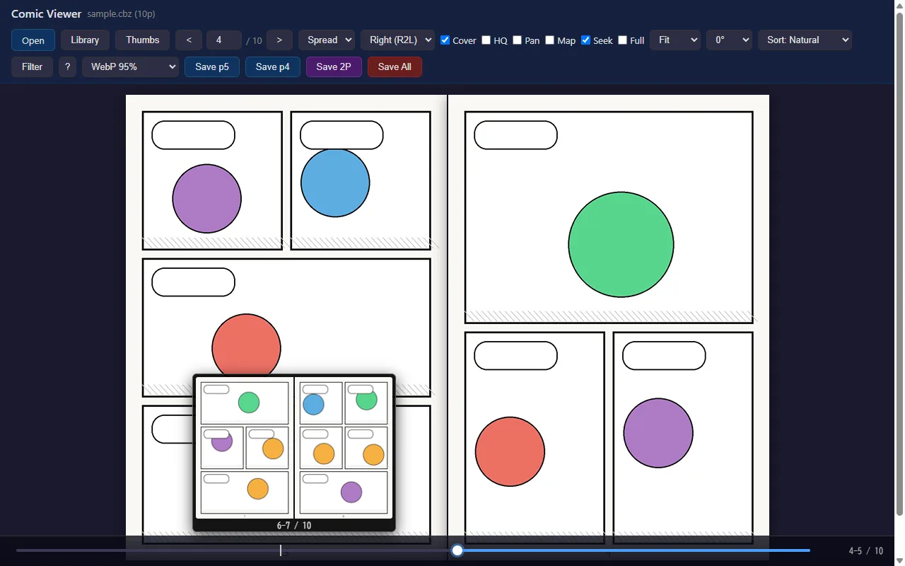
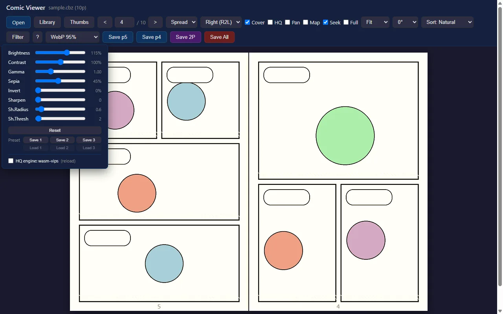

目次
01はじめに
使い始めるのに準備はいりません。上のボタンからビューアを開き、手元のファイルを読み込むだけです。
- ビューアを開く漫画・書庫なら Comic Viewer、PDF だけなら PDF Viewer。
- ファイルを読み込む画面にドラッグ＆ドロップするか、Open ボタンで選択。
- 読む・保存するページをめくり、気に入ったページは Save Page で画像に。
読み込んだファイルの展開・表示・画像変換はすべてブラウザ内で行われ、サーバーには一切送信されません。このサイトにはアクセス解析 (Google Analytics) が入っていますが、記録されるのはページの閲覧だけで、ファイルの中身や名前は含まれません。
対応ブラウザ: Chrome / Edge / Firefox / Safari の最近のバージョン (パソコン・スマートフォン・タブレット)。
02どちらを使う？
2 つのビューアは操作方法がほぼ共通です。迷ったら Comic Viewer を選べば PDF も開けます。
| できること | Comic Viewer | PDF Viewer |
|---|---|---|
| ○ | ○ | |
| CBZ / ZIP・CBR / RAR・CB7 / 7z | ○ | — |
| EPUB (画像ベース + 本文テキスト表示) | ○ | — |
| 見開き・右綴じ・スクロール表示 | ○ | ○ |
| ページを画像として保存 | ○ | ○ |
| PDF のテキスト選択・全文検索 | — | ○ |
| PDF の注釈コメント一覧 | — | ○ |
| アニメーション GIF / APNG / WebP の再生 | ○ | — |
書庫の中の画像は JPEG / PNG / WebP / GIF / BMP / AVIF / JXL / TIFF に対応しています (HEIC / HEIF は Safari のみ。JXL・TIFF などブラウザが表示できない形式のページは読み飛ばされます)。
03ファイルを開く
ドラッグ＆ドロップ
ファイルをビューアの画面に落とすだけ。パソコンでいちばん手軽な方法です。
Open ボタン
ヘッダー左上の Open (PDF Viewer は Open PDF) からファイルを選びます。スマートフォンはこちら。
ダブルクリック / 共有
アプリとしてインストールすると、エクスプローラーからのダブルクリックや、Android の「共有」メニューからも開けます。
ファイルを閉じる
Esc を 2 回続けて押すか、左上のタイトル (Comic Viewer) をタップすると、ファイルを閉じて最初の画面に戻ります。
パスワード付きのファイル
パスワード付きの PDF や ZIP / RAR / 7z は、開くときにパスワードの入力欄が表示されます。
04ページをめくる
画面を左右と中央の 3 つに分けて考えると分かりやすくなります。
| 操作 | 右綴じ (R2L・日本の漫画) | 左綴じ (L2R・洋書) |
|---|---|---|
| 画面の左 1/3 をクリック / ← | 次のページ | 前のページ |
| 画面の右 1/3 をクリック / → | 前のページ | 次のページ |
| 画面の中央 1/3 をクリック | メニュー (ヘッダー) の表示 / 非表示 | |
| ↑ ↓ / マウスホイール | 前 / 次のページ | |
| 左右にスワイプ | ページ送り (スマートフォン・タブレット) | |
| Home / End | 最初 / 最後のページ | |
右綴じのときはヘッダーの < > ボタンも読む向きに合わせて反転します (< が「次へ」)。ページ番号の欄に数字を入れて Enter を押すとそのページへ飛べます。
シークバー

シークバーは Seek のチェックで ON / OFF できます (既定は ON)。シークバーの上でホイールを回すと 1 ページずつ送れます。しおりの位置や EPUB の章の区切りも印で表示されます。
サムネイル一覧
Thumbs ボタンで左側に全ページの縮小画像が並びます。クリックでそのページへ移動します。
05表示の切り替え
ヘッダーのボタンやプルダウンで見え方を変えられます。表示モードや HQ などの設定は次回も引き継がれます。
| 項目 | 内容 |
|---|---|
| Single / Spread / Scroll | 1 ページずつ / 見開き / 全ページを縦に並べた連続スクロール (Webtoon 風) |
| Right (R2L) / Left (L2R) | 綴じ方向。日本の漫画は Right、横書きの本は Left |
| Cover | 見開き時に 1 ページ目 (表紙) を単独で表示。見開きの組み合わせが 1 ページずれているときに切り替えます |
| Gapless | Scroll のときだけ表示。ページ間の隙間をなくしてつなげて表示します |
| Fit / 50%〜300% | 表示倍率。Fit は画面に収まる大きさ |
| 0°〜270° | ページを回転 (保存する画像にも反映されます) |
| HQ | 縮小表示を高画質にします。細かいスクリーントーンのモアレが目立つときに |
| Pan | ドラッグで画面を動かすモード。拡大して読むときに便利 |
| Map | 右下に全体図と現在の表示範囲を表示。クリックでその位置へ移動 |
| Full | 全画面表示 |
Z キーを押すと 300% + Pan + Map の組み合わせに一発で切り替わり、もう一度押すと元の設定に戻ります。
読書に集中したいときは H キー (または画面中央のタップ) でヘッダーを隠すと、その分ページが大きく表示されます。
06ショートカット一覧
ビューアで ? キーを押すか、ヘッダーの ? ボタンでいつでも一覧を表示できます。
| キー | 動作 |
|---|---|
| ← → ↑ ↓ | ページ送り (左右は綴じ方向で反転) |
| Home End | 最初 / 最後のページ |
| H | ヘッダーの表示 / 非表示 |
| C | Cover (表紙を単独表示) の切り替え |
| B | 綴じ方向 (右綴じ ⇄ 左綴じ) の切り替え |
| Z | ズーム (300% + Pan + Map) ⇄ 元に戻す |
| L | 前回読み終えたページへ移動 (しおり機能が ON のとき) |
| M | いちばん先まで読んだページへ移動 (しおり機能が ON のとき) |
| T | EPUB の目次を開閉 (Comic Viewer) |
| R | EPUB の本文リーダーを開く (Comic Viewer) |
| E | EPUB の構造解析をやり直す (Comic Viewer・通常は不要) |
| O | サーバーのライブラリを開く (自分のサーバーに置いた場合のみ) |
| Esc | メニューを再表示 / ダイアログを閉じる。2 秒以内に 2 回でファイルを閉じる |
| ? | ショートカット一覧 |
07画像として保存
表示中のページをそのまま画像ファイルにできます。これがこのツールの名前の由来 ("with Screenshot") です。
| ボタン | 保存されるもの |
|---|---|
| Save Page | 表示中のページ。見開き中は Save p5 Save p4 のように左右のページ別のボタンに変わります |
| Save 2P | 表示中のページと次のページを 1 枚につなげた見開き画像 (Scroll では縦につなげます) |
| Save All | 全ページを連番で一括保存 |
保存形式はボタン横のプルダウンで選べます。
- WebP 95% (既定)・JPEG 95%・PNG — ファイルとしてダウンロード。ファイル名は
元のファイル名_ページ番号.webp - Clipboard (Page) — ページ全体をクリップボードにコピー。チャットや画像編集ソフトにそのまま貼り付けられます
- Clipboard (View) — いま画面に見えている範囲だけをコピー。拡大表示と組み合わせると「コマだけ切り抜き」ができます
解像度は PDF が 2 倍、書庫の画像は元の画像そのままの大きさです。回転の設定は反映されますが、色調補正 (Filter) は画面表示のみで保存画像には反映されません。
ブラウザによっては「複数のファイルのダウンロード」の許可を求められます。アドレスバー付近に表示される確認で「許可」を選んでください。
08しおり
しおり機能は最初は OFF です。サイドバーの Bookmarks タブを開き、Bookmarks のチェックを入れると使えるようになります。
- 自動しおり — 最後に開いたページと、いちばん先まで読んだページを自動で記録します。次に同じファイルを開くと「p.X から再開」の通知が出て、タップでそのページへ戻れます
- 手動しおり — サムネイル一覧の
●をクリックしたページに付きます。Bookmarks タブに一覧表示されます - 管理 — この本のしおりを消す / 全部消す / JSON で書き出し・読み込み (別のブラウザへの引っ越しに)
しおりはこのブラウザの中にだけ保存され、ファイル名とサイズから作った識別子で本を見分けます (初期設定ではファイル名そのものは保存しません)。Comic Viewer と PDF Viewer でしおりは共有されます。
09色調補正 (Filter)

| スライダー | 内容 |
|---|---|
| Brightness / Contrast | 明るさ / コントラスト |
| Gamma | 中間の明るさだけを調整。1.00 より大きいと暗い部分が見やすくなります。黒つぶれしたスキャン画像に |
| Sepia / Invert | セピア調 / 色反転 (夜間に白いページがまぶしいときなど) |
| Sharpen / Sh.Radius / Sh.Thresh | 輪郭を強調するシャープネス。動かすと自動で HQ が ON になります |
よく使う設定は Save 1〜Save 3 に保存し、Load 1〜Load 3 で呼び出せます。Reset ですべて初期値に戻ります。
10EPUB を読む Comic Viewer
EPUB には、ページが画像でできた固定レイアウト型 (漫画・写真集など) と、文字が流し込まれるリフロー型 (小説など) の 2 種類があります。Comic Viewer はどちらも開けます。
固定レイアウト型 (画像の EPUB)
- 開くと自動で本の構造を解析し、正しい読み順にページを並べ替えます (並び順のプルダウンが Sort: EPUB になります)
- 目次があればサイドバーに TOC タブが現れます。T キーで開閉、項目のクリックでその章へ移動
リフロー型 (文字の EPUB)
- 開くと自動で本文リーダーが起動し、中の文章を読めます。あとから開くときは R キー、または TOC タブ下部の「本文を読む」
- リーダーでは ← → で章を移動、A- A+ で文字サイズ、幅: 標準 / 広い で行の長さを変えられます。原文CSS で本来のデザインに切り替えることもできます
縦書きの本も横書きで表示されます。ページ分割はなく、章ごとに縦にスクロールして読む形です。安全のため EPUB 内のスクリプトや外部への通信はすべて無効にしています。本格的にリフロー型 EPUB を読むなら BiBi などの専用リーダーをおすすめします。
11書庫ファイルの便利機能 Comic Viewer
ページの並び順
ページがおかしな順番で並ぶときは、ヘッダーの並び順を切り替えてください。
| 並び順 | 並び方 |
|---|---|
| Sort: Natural (既定) | 数字を数値として比較。1 → 2 → 10 → 100 |
| Sort: Lexical | 文字の順。1 → 10 → 100 → 2 |
| Sort: Timestamp | ファイルの更新日時が古い順 |
書庫の中の書庫
ZIP の中に複数の巻 (CBZ など) がまとめて入っている場合は、どれを開くかを選ぶ画面が出ます。選んだものだけを展開するので大きな書庫でも待たされません。
アニメーション画像
動く GIF / APNG / WebP のページには左下に ▶ Play が表示され、クリックで再生できます。
文字化けしたファイル名
Windows で作られた ZIP の日本語ファイル名 (Shift_JIS) は自動で正しく読み取ります。
12PDF だけの機能 PDF Viewer
テキストの選択と検索
ヘッダーの Text にチェックを入れると、PDF の文字をマウスで選んでコピーできるようになり、検索欄が表示されます。
- 検索欄に入力すると全ページから探し、一致した箇所を黄色で強調します
- Enter / Shift+Enter (または ▼ ▲) で次 / 前の一致箇所へ。別のページにあれば自動で移動します
- Text モード中はクリックでのページ送りが止まります (文字選択を優先するため)。矢印キーでのページ送りは使えます。Esc で解除
スキャンした画像だけの PDF には文字情報がないため、選択・検索はできません。
注釈コメント
PDF にコメント (注釈) が付いていると、左下に 💬 ボタンと件数が表示されます。クリックでページごとのコメント一覧が開きます。
13アプリとしてインストール
ビューアは PWA (ホーム画面に追加できる Web アプリ) に対応しています。インストールすると次のことができるようになります。
- オフラインで使える — 一度開けば、以降はインターネットにつながっていなくても全機能が動きます
- ファイルのダブルクリックで開く — PDF や CBZ などをこのビューアに関連付けられます (パソコン版 Chrome / Edge)
- 「共有」から開く — Android でファイルアプリなどの共有メニューからビューアへ送れます
- 独立したウィンドウで開き、ブラウザのタブに埋もれません
| 環境 | インストール方法 |
|---|---|
| Chrome / Edge (パソコン) | ビューアを開き、アドレスバー右端のインストールアイコン (モニターに矢印) をクリック |
| Android (Chrome) | メニュー (︙) →「アプリをインストール」または「ホーム画面に追加」 |
| iPhone / iPad (Safari) | 共有ボタン →「ホーム画面に追加」 |
ホーム画面のアイコンからは Comic Viewer が起動します。アイコンを長押しすると PDF Viewer や高画質モード版を直接開くメニューが出ます (対応環境のみ)。
さらに高画質に (wasm-vips)
URL の末尾に ?vips=1 を付けて開くと、縮小処理のエンジンが画像処理ライブラリ libvips に切り替わります。一度付けて開けば設定は保存されます。Filter パネル最下部の HQ engine: wasm-vips でも切り替えられます。
通常の HQ でも十分きれいです。メモリを多く使うので、うまく動かない場合は自動的に通常のエンジンに戻ります。
14自分のサーバーに置く
このサイトを使う代わりに、ファイル一式を自分のパソコンやサーバーに置いて使うこともできます。GitHub からダウンロードし、フォルダで Web サーバーを起動してください。
# どれか 1 つ
python -m http.server 8000
php -S localhost:8000
npx serve .ブラウザで http://localhost:8000/comic-viewer.html を開きます。
file:// で開くとブラウザの制限で部品が読み込めないため、必ず上のように Web サーバー経由で開いてください。
ライブラリ機能 (PHP が動くサーバーのみ)
PHP が動くサーバーに library.php を置くと、サーバー上のフォルダにある本を一覧・検索してそのまま開ける「ライブラリ」が使えます (ヘッダーの Library ボタンまたは O キー)。自宅の NAS の本棚をスマートフォンから読む、といった使い方ができます。表紙のサムネイル表示、既読ページの表示、Basic 認証にも対応しています。
このサイト (GitHub Pages) では PHP が動かないため、ライブラリ機能は使えません。設定方法は README の「ライブラリ参照」をご覧ください。
15困ったときは
見開きの左右の組み合わせがずれている
C キー (または Cover のチェック) を切り替えてください。表紙を単独にするかどうかで組み合わせが 1 ページずれます。左右が逆なら B キーで綴じ方向を切り替えます。
ページの順番がおかしい
書庫ファイルなら、ヘッダーの並び順 (Sort: Natural など) を切り替えてみてください。EPUB は自動で正しい順番に並べ替えますが、うまくいかない場合は E キーで解析をやり直せます。
ヘッダーが消えて操作できなくなった
画面の中央をタップ (クリック) するか、H / Esc キーを押すと再表示されます。
ファイルを閉じて別のファイルを開きたい
そのまま新しいファイルをドラッグ＆ドロップするか Open で選べば切り替わります。最初の画面に戻りたいときは Esc を 2 回、または左上のタイトルをタップします。
PDF の日本語が表示されない・文字化けする
フォントが埋め込まれていない PDF では、表示に必要な文字データを初回だけ追加で読み込みます。オフラインでその PDF を初めて開いた場合は表示できないことがあるので、一度インターネットにつながった状態で開いてください (以降はオフラインでも表示されます)。
NAS (ネットワーク上のフォルダ) のファイルが途中で読み込めなくなる
ネットワークの接続が一時的に切れると「〇〇% まで読み込みました」という通知が出ます。通知をタップするか、もう一度同じファイルを開くと続きから読み込みを再開します。何度か繰り返すと最後まで読み込めます。
ドラッグ＆ドロップやファイルの関連付けで開いた場合は、自動で開き直して再試行します。
大きなファイルを開くと時間がかかる
書庫ファイルは全ページの展開とサムネイル作成が終わるまで「展開中...」と表示されます。数百 MB の書庫では数十秒かかることがあります。なお安全のため、展開後の合計が 2 GB を超える書庫や、1 万ファイルを超える書庫は開けません。
しおりが保存されない / L・M キーでエラーになる
しおり機能は初期状態で OFF です。サイドバーの Bookmarks タブで Bookmarks にチェックを入れてください。また、ブラウザのプライベートモードでは閉じるとしおりが消えます。
ファイルの中身が外部に送られていないか心配
送られていません。ファイルの読み込み・展開・表示・画像の保存はすべてブラウザ内で完結します。オフラインで使えることが、ファイルを外部に送っていない証拠でもあります。ソースコードはすべて GitHub で公開しています。